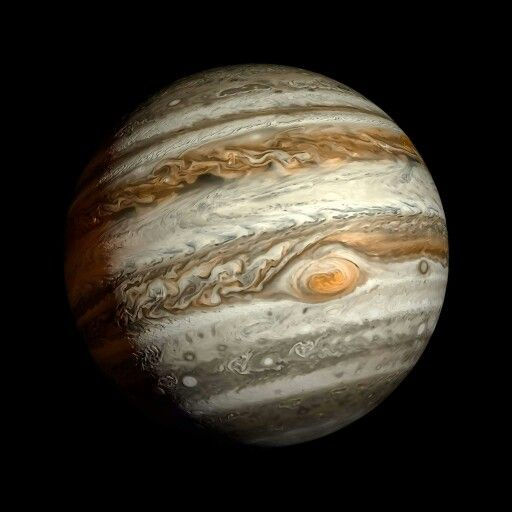

نظرة عامة
المشتري هو أكبر كوكب في النظام الشمسي، يتميز ببقعته الحمراء الكبرى وعواصفه الهائلة التي تدوم لقرون.
خصائص المشتري
- القطر: حوالي 139,820 كم
- مدة اليوم: حوالي 9.9 ساعات
- مدة السنة: حوالي 11.86 سنة أرضية
- درجة الحرارة: تصل إلى -145 درجة مئوية
معرض الصور
صورة لكوكب المشتري تُظهر بقعته الحمراء الكبرى.